raw89
keep a37 · 全景480×320
frames/089/keep/old_formal.pngframes/089/keep/c2_matte.png
frames/089/keep/surface_lod.png
frames/089/reference.png返回报告的同步拖动模块。本页无需JavaScript，全部49帧、两状态、三研究列齐备；实拍仍有a37，不是delete真值。点击图片打开无损480原尺寸PNG。
frames/089/keep/old_formal.pngframes/089/keep/c2_matte.pngframes/089/keep/surface_lod.pngframes/089/reference.pngframes/090/keep/old_formal.pngframes/090/keep/c2_matte.png
frames/090/keep/surface_lod.png
frames/090/reference.pngframes/091/keep/old_formal.pngframes/091/keep/c2_matte.png
frames/091/keep/surface_lod.png
frames/091/reference.pngframes/092/keep/old_formal.pngframes/092/keep/c2_matte.pngframes/092/keep/surface_lod.png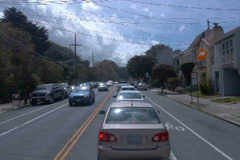
frames/092/reference.png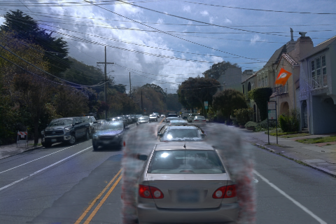
frames/093/keep/old_formal.pngframes/093/keep/c2_matte.png
frames/093/keep/surface_lod.png
frames/093/reference.pngframes/094/keep/old_formal.png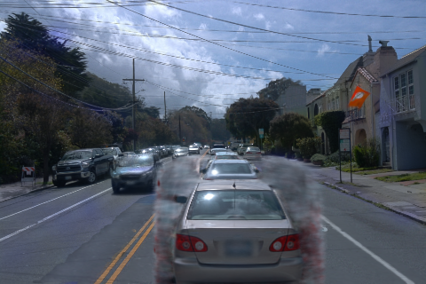
frames/094/keep/c2_matte.pngframes/094/keep/surface_lod.png
frames/094/reference.png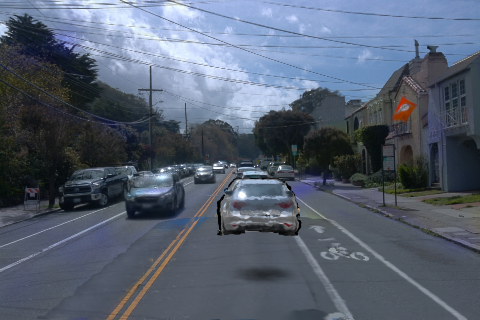
frames/094/delete/old_formal.pngframes/094/delete/c2_matte.pngframes/094/delete/surface_lod.pngframes/094/reference.pngframes/095/keep/old_formal.pngframes/095/keep/c2_matte.png
frames/095/keep/surface_lod.png
frames/095/reference.pngframes/095/delete/old_formal.png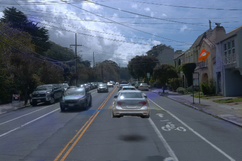
frames/095/delete/c2_matte.png
frames/095/delete/surface_lod.pngframes/095/reference.pngframes/096/keep/old_formal.pngframes/096/keep/c2_matte.png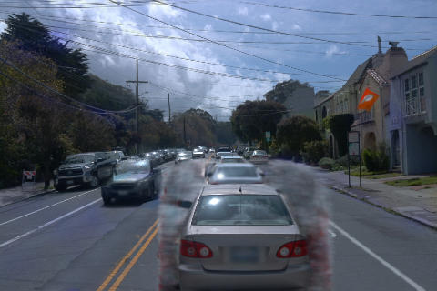
frames/096/keep/surface_lod.png
frames/096/reference.png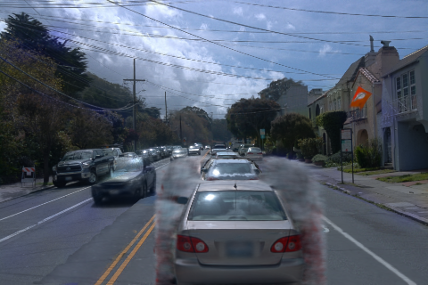
frames/097/keep/old_formal.pngframes/097/keep/c2_matte.png
frames/097/keep/surface_lod.png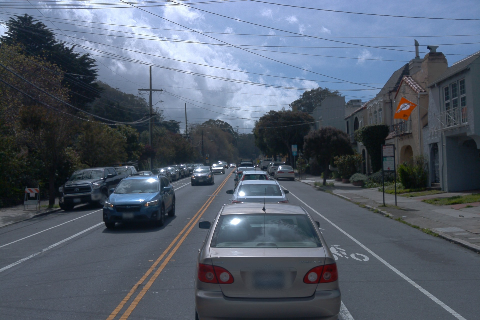
frames/097/reference.pngframes/097/delete/old_formal.png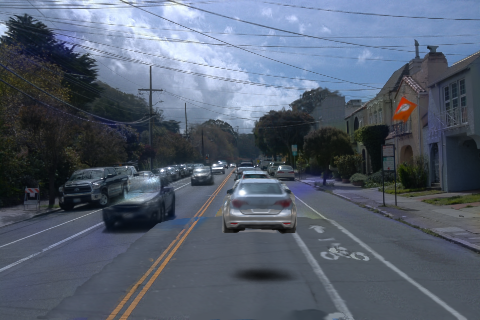
frames/097/delete/c2_matte.png
frames/097/delete/surface_lod.pngframes/097/reference.pngframes/098/keep/old_formal.pngframes/098/keep/c2_matte.png
frames/098/keep/surface_lod.png
frames/098/reference.pngframes/098/delete/old_formal.png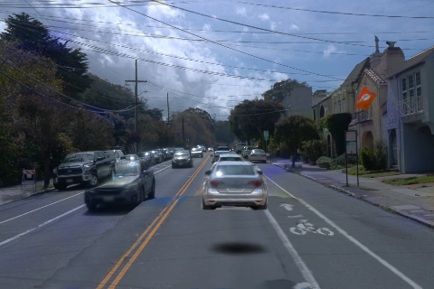
frames/098/delete/c2_matte.png
frames/098/delete/surface_lod.pngframes/098/reference.pngframes/099/keep/old_formal.png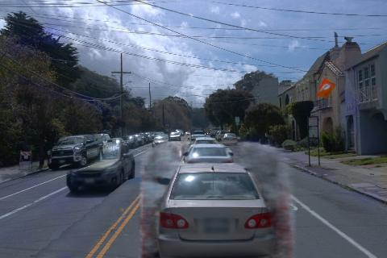
frames/099/keep/c2_matte.png
frames/099/keep/surface_lod.png
frames/099/reference.pngframes/099/delete/old_formal.png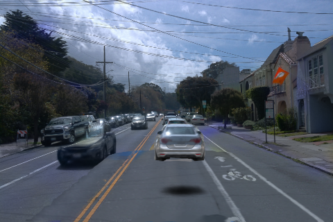
frames/099/delete/c2_matte.pngframes/099/delete/surface_lod.pngframes/099/reference.pngframes/100/keep/old_formal.pngframes/100/keep/c2_matte.png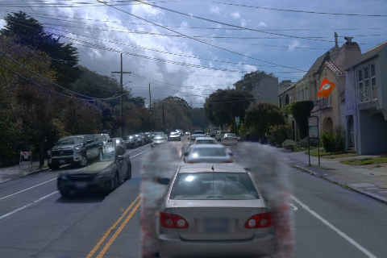
frames/100/keep/surface_lod.png
frames/100/reference.png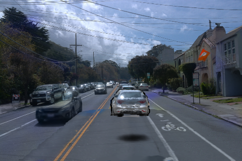
frames/100/delete/old_formal.png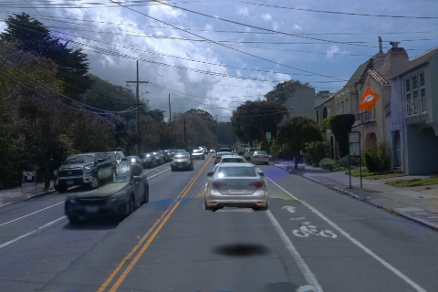
frames/100/delete/c2_matte.png
frames/100/delete/surface_lod.pngframes/100/reference.pngframes/101/keep/old_formal.png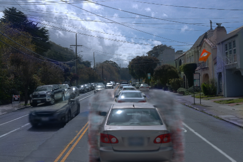
frames/101/keep/c2_matte.pngframes/101/keep/surface_lod.png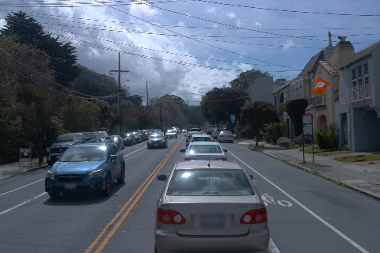
frames/101/reference.png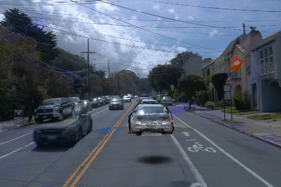
frames/101/delete/old_formal.pngframes/101/delete/c2_matte.pngframes/101/delete/surface_lod.pngframes/101/reference.pngframes/102/keep/old_formal.png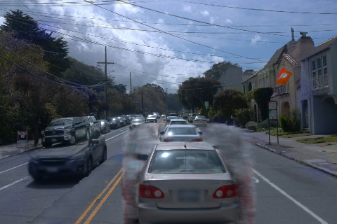
frames/102/keep/c2_matte.pngframes/102/keep/surface_lod.png
frames/102/reference.png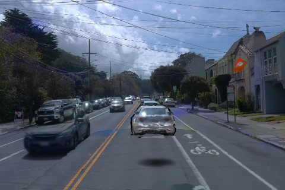
frames/102/delete/old_formal.pngframes/102/delete/c2_matte.pngframes/102/delete/surface_lod.pngframes/102/reference.pngframes/103/keep/old_formal.pngframes/103/keep/c2_matte.png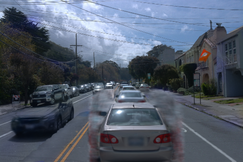
frames/103/keep/surface_lod.png
frames/103/reference.pngframes/103/delete/old_formal.png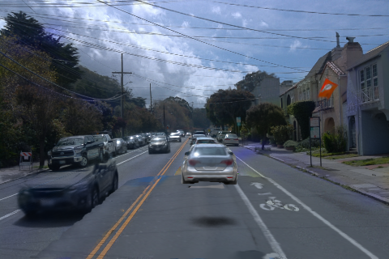
frames/103/delete/c2_matte.pngframes/103/delete/surface_lod.pngframes/103/reference.png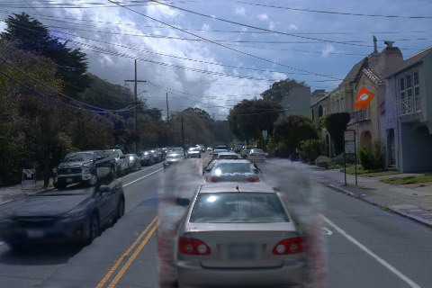
frames/104/keep/old_formal.pngframes/104/keep/c2_matte.png
frames/104/keep/surface_lod.png
frames/104/reference.png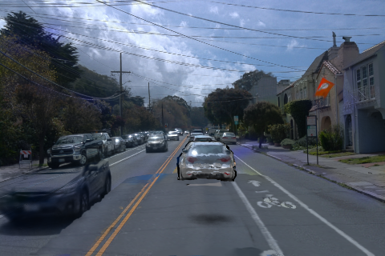
frames/104/delete/old_formal.png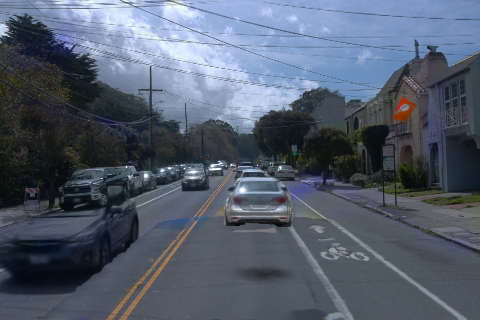
frames/104/delete/c2_matte.pngframes/104/delete/surface_lod.pngframes/104/reference.pngframes/105/keep/old_formal.png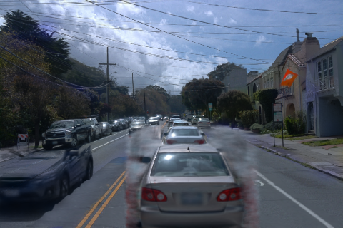
frames/105/keep/c2_matte.pngframes/105/keep/surface_lod.png
frames/105/reference.png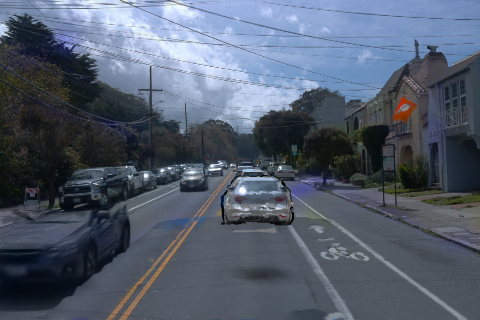
frames/105/delete/old_formal.png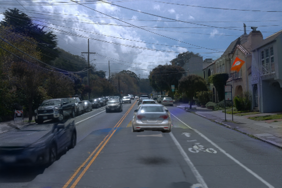
frames/105/delete/c2_matte.png
frames/105/delete/surface_lod.pngframes/105/reference.pngframes/106/keep/old_formal.pngframes/106/keep/c2_matte.png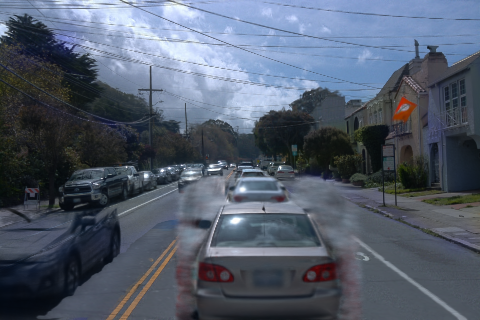
frames/106/keep/surface_lod.png
frames/106/reference.pngframes/106/delete/old_formal.pngframes/106/delete/c2_matte.png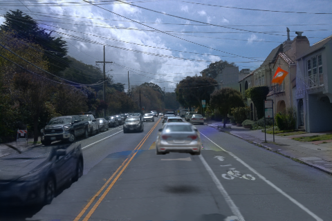
frames/106/delete/surface_lod.pngframes/106/reference.png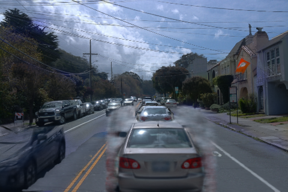
frames/107/keep/old_formal.pngframes/107/keep/c2_matte.png
frames/107/keep/surface_lod.png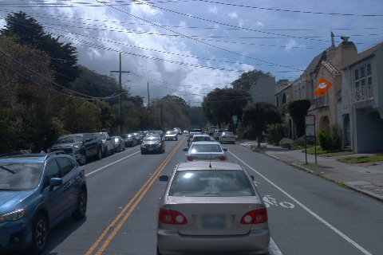
frames/107/reference.png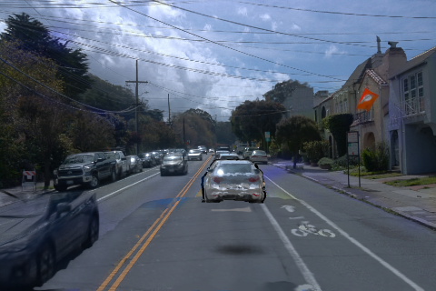
frames/107/delete/old_formal.pngframes/107/delete/c2_matte.png
frames/107/delete/surface_lod.pngframes/107/reference.pngframes/108/keep/old_formal.png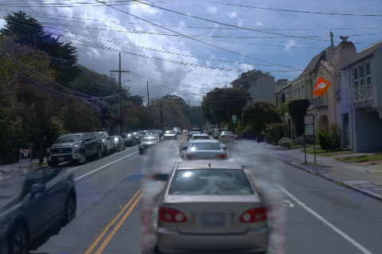
frames/108/keep/c2_matte.png
frames/108/keep/surface_lod.png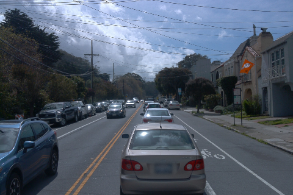
frames/108/reference.png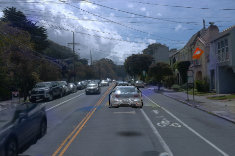
frames/108/delete/old_formal.png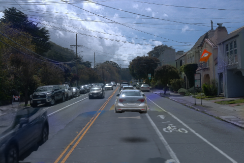
frames/108/delete/c2_matte.png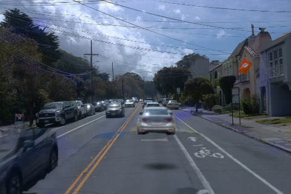
frames/108/delete/surface_lod.pngframes/108/reference.pngframes/109/keep/old_formal.png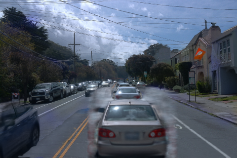
frames/109/keep/c2_matte.pngframes/109/keep/surface_lod.png
frames/109/reference.png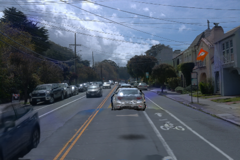
frames/109/delete/old_formal.pngframes/109/delete/c2_matte.png
frames/109/delete/surface_lod.pngframes/109/reference.png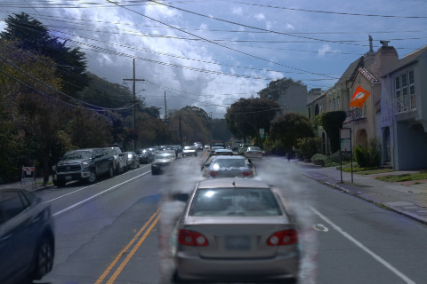
frames/110/keep/old_formal.pngframes/110/keep/c2_matte.png
frames/110/keep/surface_lod.png
frames/110/reference.pngframes/110/delete/old_formal.png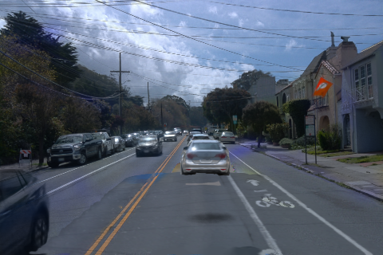
frames/110/delete/c2_matte.png
frames/110/delete/surface_lod.pngframes/110/reference.pngframes/111/keep/old_formal.png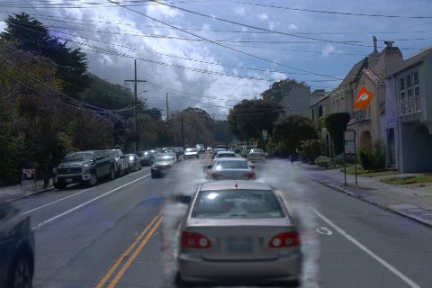
frames/111/keep/c2_matte.pngframes/111/keep/surface_lod.png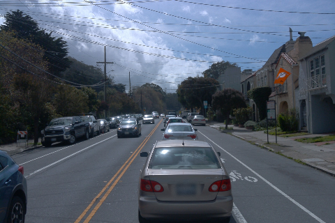
frames/111/reference.png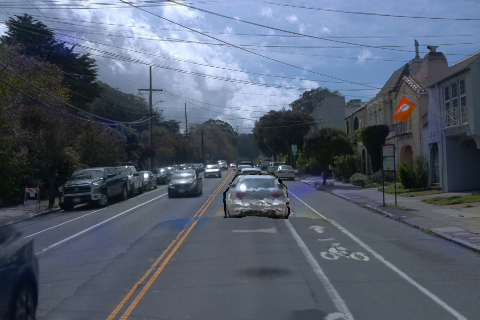
frames/111/delete/old_formal.png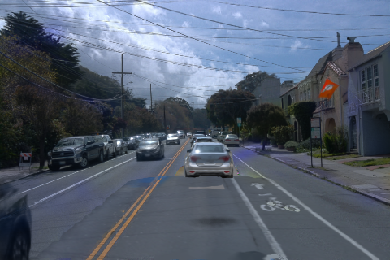
frames/111/delete/c2_matte.png
frames/111/delete/surface_lod.pngframes/111/reference.png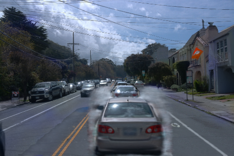
frames/112/keep/old_formal.pngframes/112/keep/c2_matte.png
frames/112/keep/surface_lod.png
frames/112/reference.pngframes/112/delete/old_formal.pngframes/112/delete/c2_matte.png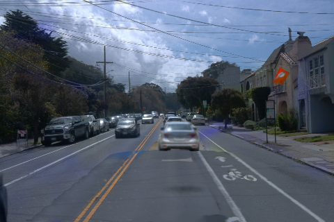
frames/112/delete/surface_lod.pngframes/112/reference.pngframes/113/keep/old_formal.pngframes/113/keep/c2_matte.png
frames/113/keep/surface_lod.pngframes/113/reference.pngframes/114/keep/old_formal.pngframes/114/keep/c2_matte.pngframes/114/keep/surface_lod.png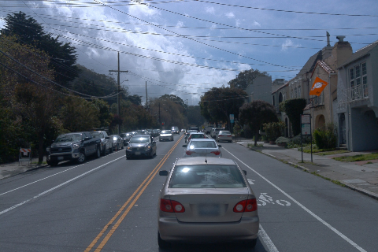
frames/114/reference.png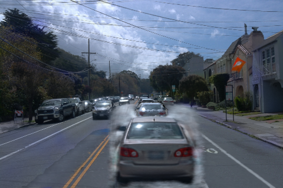
frames/115/keep/old_formal.pngframes/115/keep/c2_matte.png
frames/115/keep/surface_lod.png
frames/115/reference.pngframes/116/keep/old_formal.pngframes/116/keep/c2_matte.png
frames/116/keep/surface_lod.pngframes/116/reference.pngframes/117/keep/old_formal.pngframes/117/keep/c2_matte.pngframes/117/keep/surface_lod.png
frames/117/reference.pngframes/118/keep/old_formal.pngframes/118/keep/c2_matte.png
frames/118/keep/surface_lod.png
frames/118/reference.pngframes/119/keep/old_formal.pngframes/119/keep/c2_matte.png
frames/119/keep/surface_lod.png
frames/119/reference.pngframes/120/keep/old_formal.pngframes/120/keep/c2_matte.png
frames/120/keep/surface_lod.pngframes/120/reference.pngframes/121/keep/old_formal.pngframes/121/keep/c2_matte.pngframes/121/keep/surface_lod.png
frames/121/reference.pngframes/122/keep/old_formal.pngframes/122/keep/c2_matte.pngframes/122/keep/surface_lod.png
frames/122/reference.pngframes/123/keep/old_formal.pngframes/123/keep/c2_matte.pngframes/123/keep/surface_lod.pngframes/123/reference.pngframes/124/keep/old_formal.pngframes/124/keep/c2_matte.pngframes/124/keep/surface_lod.pngframes/124/reference.pngframes/125/keep/old_formal.pngframes/125/keep/c2_matte.png
frames/125/keep/surface_lod.pngframes/125/reference.pngframes/126/keep/old_formal.pngframes/126/keep/c2_matte.pngframes/126/keep/surface_lod.pngframes/126/reference.pngframes/127/keep/old_formal.pngframes/127/keep/c2_matte.pngframes/127/keep/surface_lod.pngframes/127/reference.pngframes/128/keep/old_formal.pngframes/128/keep/c2_matte.pngframes/128/keep/surface_lod.pngframes/128/reference.pngframes/129/keep/old_formal.pngframes/129/keep/c2_matte.png
frames/129/keep/surface_lod.png
frames/129/reference.pngframes/130/keep/old_formal.pngframes/130/keep/c2_matte.pngframes/130/keep/surface_lod.pngframes/130/reference.pngframes/131/keep/old_formal.pngframes/131/keep/c2_matte.png
frames/131/keep/surface_lod.png
frames/131/reference.pngframes/132/keep/old_formal.pngframes/132/keep/c2_matte.png
frames/132/keep/surface_lod.pngframes/132/reference.pngframes/133/keep/old_formal.pngframes/133/keep/c2_matte.pngframes/133/keep/surface_lod.pngframes/133/reference.pngframes/134/keep/old_formal.pngframes/134/keep/c2_matte.png
frames/134/keep/surface_lod.pngframes/134/reference.pngframes/135/keep/old_formal.pngframes/135/keep/c2_matte.pngframes/135/keep/surface_lod.png
frames/135/reference.pngframes/136/keep/old_formal.pngframes/136/keep/c2_matte.pngframes/136/keep/surface_lod.pngframes/136/reference.pngframes/137/keep/old_formal.pngframes/137/keep/c2_matte.png
frames/137/keep/surface_lod.pngframes/137/reference.png